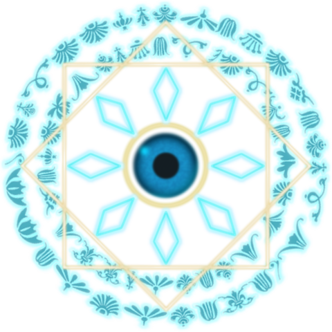

<html>
<head>
  <title>Gacha Rox</title>
  <script src="./jspsych-6.3.1/jspsych.js"></script>
  <script src="./jspsych-6.3.1/plugins/jspsych-html-keyboard-response.js"></script>
  <script src="./jspsych-6.3.1/plugins/jspsych-canvas-keyboard-response.js"></script> 
  <script src="./jspsych-6.3.1/plugins/jspsych-html-button-response.js"></script>
  <script src="./jspsych-6.3.1/plugins/jspsych-image-keyboard-response.js"></script>
  <script src="./jspsych-6.3.1/plugins/jspsych-preload.js"></script>
  <link href="./jspsych-6.3.1/css/jspsych.css" rel="stylesheet" type="text/css">
</head>
<body bgcolor="#000000", text="#ffffff"></body>
<style>
  .image-container {
    display: flex;
    overflow: hidden;
    width: 10%; /* 画面幅いっぱいに表示 */
  }
</style>
<script>

var swid = document.documentElement.clientWidth*0.8;
var shgt = document.documentElement.clientHeight*0.8;
var nitem = 10;
var thre1 = 0.96; //SSRの確率
var thre2 = 0.71; //SRの確率
const stmfl = ['img/SSR.png', 'img/SR.png', 'img/R.png'];
// var mahouzin = {
//          type: 'html-keyboard-response',
//          stimulus: '',
//          choices: jsPsych.NO_KEYS,
//          trial_duration: 5000,
//          on_start: function() {
//            document.addEventListener('mousemove', rotateCursor);
//          },
//          on_finish: function() {
//            document.removeEventListener('mousemove', rotateCursor);
//            }
//            };

   /*function rotateCursor(event) {
     const cursor = document.getElementById('cursor');
     const cursorX = event.clientX;
     const cursorY = event.clientY;

     const centerX = window.innerWidth / 2;
     const centerY = window.innerHeight / 2;

     const angle = Math.atan2(cursorY - centerY, cursorX - centerX);
     cursor.style.transform = `rotate(${angle}rad)`;
   }*/

   /* create timeline */
   var timeline = [];

  /* preload images */
  var preload = {
    type: 'preload',
    images: ['img/SSR.png','img/SR.png', 'img/R.png'],
    show_detailed_errors: true
  }
  timeline.push(preload);

      /* define welcome message trial */
      var welcome = {
      type: "html-keyboard-response",
      stimulus: "Welcome to the experiment. Press any key to begin."
    };
    timeline.push(welcome);

    /* define instructions trial */
    var instructions = {
      type: "html-keyboard-response",
      /*stimulus: `
        <p>In this experiment, a circle will appear in the center 
        of the screen.</p><p>If the circle is <strong>blue</strong>, 
        press the letter F on the keyboard as fast as you can.</p>
        <p>If the circle is <strong>orange</strong>, press the letter J 
        as fast as you can.</p>
        <div style='width: 700px;'>
        <div style='float: left;'></img>
        <p class='small'><strong>Press the F key</strong></p></div>
        <div style='float: right;'></img>
        <p class='small'><strong>Press the J key</strong></p></div>
        </div>
        <p>Press any key to begin.</p>
      `,*/
      stimulus: `
        <p>この実験では、ガチャを引いてもらいます。</p>
        <p>「READY?」という文字が1秒間表示された後、回転する魔法陣が5秒間出現します。 </p>
        <p>魔法陣の回転が終了すると、ガチャの結果が表示されます。</p>
        <p>ガチャ結果画面で「F」キーを押すと、次のガチャ試行に移ります。</p>
        <p>「READY?」の表示からガチャ結果表示の流れを10回繰り返していただきます。</p>
        <p>どれかキーを押すと実験が始まります。</p>
      `,
      post_trial_gap: 2000
    };
    timeline.push(instructions);
   
    /* test trials */
    function drawStm(c){
        var ctx = c.getContext('2d');
        const stm = new Array();
        for (let i=0; i<3; i++){
          stm[i] = new Image();
          stm[i].src = stmfl[i];
        }
        //stm[1].onload = function() {
          var iwid = stm[0].width;
          var ihgt = stm[0].height;
          var scl = (swid/10)/iwid;
          let wstm = new Array();
          for (let i=0; i<nitem; i++){
              var bx=swid/2-iwid*scl*(nitem/2)+i*iwid*scl;
              var by=shgt/2-ihgt*scl*.5;
              var rnum = Math.random(); //0~1までのランダムな数字を出す
              var suji= Math.round(rnum*100)
              //rnumがthre1より大きい場合SSR、thre1より小さくthre2より大きい場合SR、thre2よりも小さい場合Rが出る
              wstm[i] = 2 - (Number(rnum>thre1) + Number(rnum>thre2));
              var tdata = {
                number: i+1,
                lot1: wstm[i],
                lot2: suji,
                kaku1: thre1,
                kaku2: thre2 
              }
              jsPsych.data.write(tdata);
              //console.log(ctx);
              ctx.drawImage(stm[wstm[i]], bx, by, iwid*scl, ihgt*scl);
              //ctx.fillStyle="white";
              //ctx.fillText(String(wstm), bx, by);
          //}
        }
        //return wstm;
    }

    /* var fixation = {
      type: 'html-keyboard-response',
      stimulus: '<div style="font-size:60px;">+</div>',
      choices: jsPsych.NO_KEYS,
      trial_duration: 500, //function(){
        //return jsPsych.randomization.sampleWithoutReplacement([250, 500, 750, 1000, 1250, 1500, 1750, 2000], 1)[0];
      //},
      data: {
        task: 'fixation'
      }
    } */
    //timeline.push(fixation);

    /* ready check */
    var readycheck = {
      type: "html-keyboard-response",
      stimulus: "<div style='font-size: 40px;'>READY?</div>",
      choices: jsPsych.NO_KEYS,
      trial_duration: 1000,
      data: {
        task: 'readycheck'
      }
    };
    timeline.push(readycheck);

    const showimg = {
        type: 'html-keyboard-response',
        trial_duration: 5000,
        stimulus: //'',
        function () {
        // Define the HTML content for the image
        const html =
          '';
        // Set a timeout to rotate the image
        setTimeout(() => {
          document.getElementById("cursor").style.transform =
            "rotate(1800deg)";
        }, 0);
        return html;
        //function(){
        //return jsPsych.randomization.sampleWithoutReplacement([1000, 1500, 2000], 1)[0];
      //}
    }
}

    var lottery = {
        type: "canvas-keyboard-response",
        canvas_size: [shgt, swid],
        stimulus: drawStm,
        choices: ['f'],
        //data: {
        //    task: 'response',
        //    correct_response: jsPsych.timelineVariable('correct_response')
        //},
    //on_finish: function(data){
    //     data.correct = jsPsych.pluginAPI.compareKeys(data.response, data.correct_response);
   }

    
    //timeline.push(showimg);

    var test_proc = {
        timeline: [readycheck, showimg, lottery],
        repetitions: 1
    }
    timeline.push(test_proc);

    /* start the experiment */
    jsPsych.init({
        timeline: timeline,
        on_finish: function() {
        //jsPsych.data.displayData();
      }
    });


//    var r = {
//       timeline: generateTrials(),
//       on_finish: function() {
//         }
//     };

//     function generateTrials() {
//       const trials = [];
//       for (let i = 0; i < 10; i++) {
//         const trial = {
//           type: 'html-keyboard-response',
//           stimulus: generateStimulus(),
//           choices: jsPsych.NO_KEYS,
//           trial_duration: 200
//         };
//         trials.push(trial);
//       }
//       return trials;
//     }

//     function generateStimulus() {
//       const images = [
//         'img/R.png',
//         'img/SR.png',
//         'img/SSR.png'
//       ];

//       let stimulus = '<div class="image-container">';
//       for (let i = 0; i < 10; i++) {
//         const imageIndex = i % 3; // 0, 1, or 2
//         stimulus += ``;
//       }
//       stimulus += '</div>';

//       return stimulus;
//     }
   
//     var purosdure={
//     timeline:[mahouzin ,r],
//     randomize_order: true,
//     repetitions: 2,
// }

//    jsPsych.init({
//     timeline: [purosdure], // 提示順序の指定
//   });
   </script>
</html>